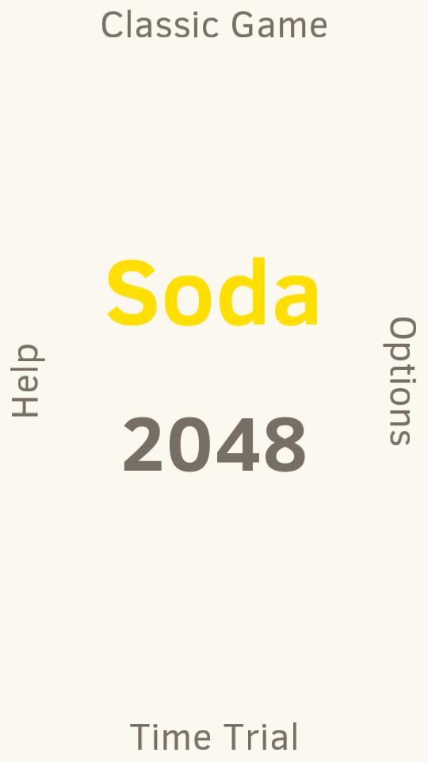
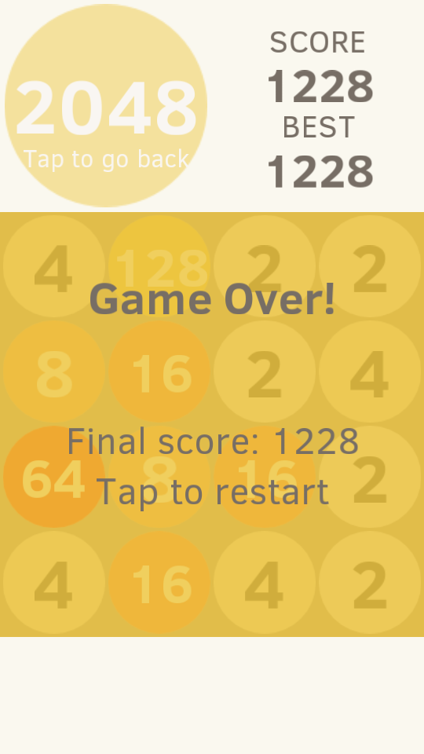
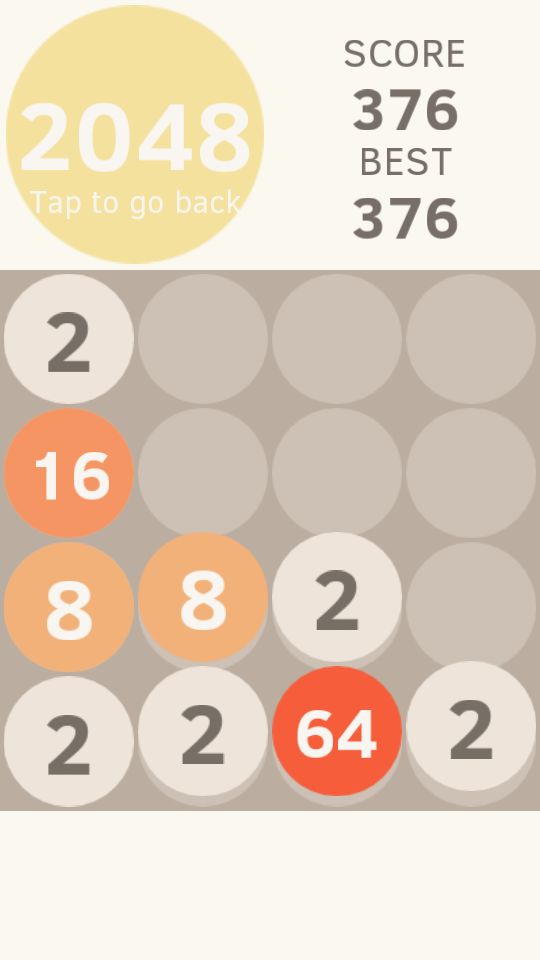
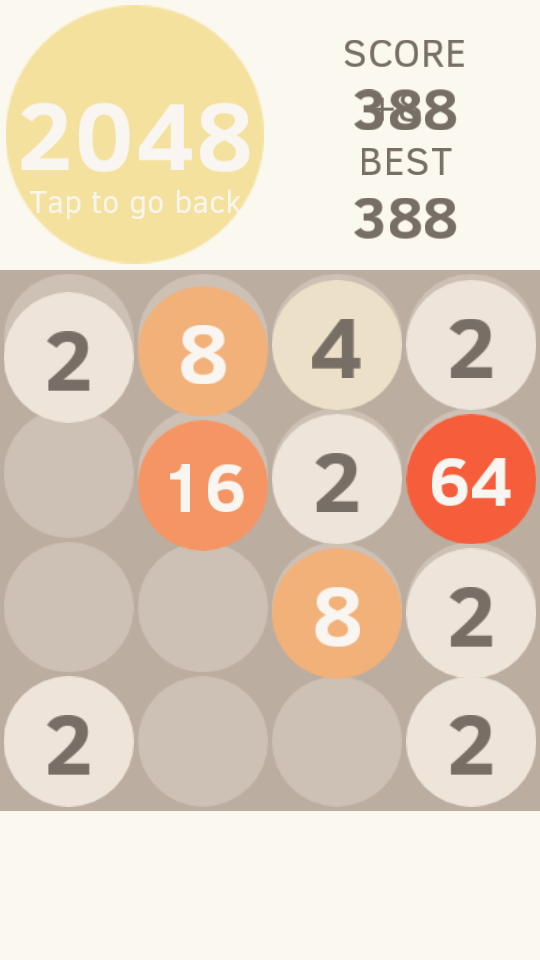
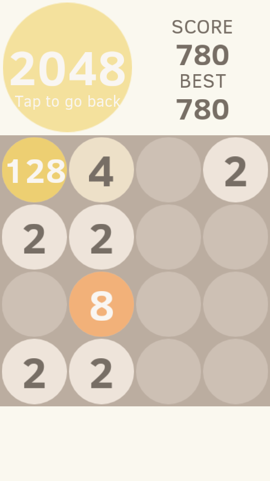
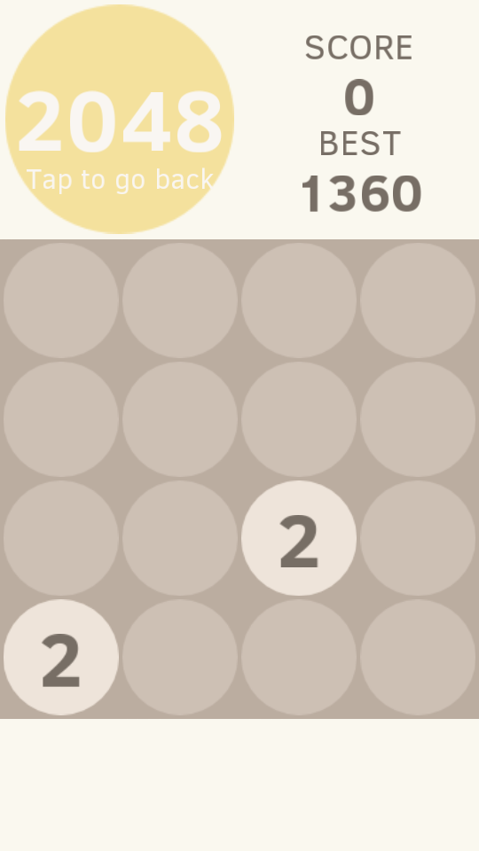

基本玩法与标准2048相同，而且同样有两个模式：
“Classic”（经典/标准游戏）与“Time Trial”（计时测验，每隔0.5秒会自动出现一个数字）。
如果还有什么不明白，可以去玩一下官方2048的手机应用，或者下载Soda2048。
不过，还是有一点不同之处……
（为什么这个标题叫做“玩法”的玩意什么都没讲？！）
首先我要说明的是，这个游戏没有终点！玩到4096之后仍然可以继续玩，不过当两个4096
碰到一起的时候可要注意了！目前没有设置8192的颜色，所以你可能会看到一个透明的格子写着8192，
或者……游戏崩溃（我没试过）……
另外，当得到128、256、512等的时候不像官方2048会出现光晕（玩2048仔细观察就会发现这个），
因为我懒得做了…… :)
不过，我把重点留在了最后：这个游戏的控制方法与普通2048完全不同！自己摸索吧，不行？看看后面的FAQ……
代码在此！(GPL)--> GitHub
不要过多地关注那些细节，比如最高分……我玩到接近5位数，然后那个纪录为开发光荣牺牲了 （开发阶段不小心卸载了……），而且我的历史最高分是在官方App里玩出来的…… 另外，我不小心在数字移动的时候截了图，所以……第3、4张图，你懂的
     这种情况是很正常的，因为大部分人都会用手指去点（或者戳）那些字。当然，这没有任何效果。
这个游戏的特殊之处，在于它的控制方法——和“Soda”（汽水）一样，需要你……
……
没错，就是摇，摇它！！
首先请把手机/平板电脑平放（和地面平行），然后就是用力摇——向前、向后……
正确的姿势很难用简短的人类语言描述（如果你有办法，欢迎告诉我们）。
关于摇的姿势，请见游戏中的“Help”部分——但怎么进“Help”？
一个简单的办法是，在主界面上把手机向右边倾斜一下。
看到左上角2048下面的小字“Tap to exit（点击退出）”了吗？没错，点一下！
确认一下你的Cocos2d-x版本，我们使用的是Cocos2d-x 3.2rc0，
使用这个版本编译比较容易成功。
另外，不要跟我说你在用Pascal编译器编译我们的C++代码……